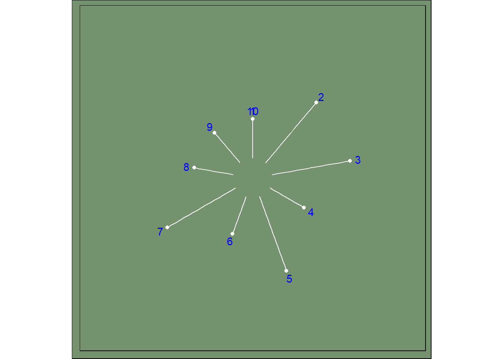

Chapter 3 소인수 분해 알고리즘
소인수 분해 알고리즘은 말 그대로, 어떤 자연수 \(N\) 을 소수의 곱으로 나타내는 것을 목표로 한다. 쉽게 설명하기 위해서 자연수 \(N\)이 두 개의 소수 \(p,q\)의 곱으로 이루어져 있다고 가정해 보겠다. 우리의 목표는 \(N\)이 주어졌을 때 \(p\)와 \(q\)를 빠른 시간 안에 알아내는 것이다. 가장 쉽게 시도해 볼 수 있는 방법은 일일이 소수를 하나씩 대입해서 \(N\)이 그 소수로 나누어지는지 확인해 보는 것이다.(김한영 2020)
3.1 소인수 판정
Prime number function in R을 참조하여 자연수가 소인수인지 판정할 수 있다. 소인수 판정 알고리즘은 판정하고자 하는 자연수 \(N\)을 2 ~ \(N-1\)까지 나눠서 나눠지게 되면 소인수가 아니고 나눠지지 않는 경우는 소인수로 판정하는 것이다. 여기서 %% 몫은 버리고 나머지만 취하는 연산자. 즉, 10을 3으로 나누면 나머지가 1이 된다. 이를 10 %% 3 작성하게 되면 1 가 된다.
is_prime <- function(num) {
if (num == 2) {
TRUE
} else if (any(num %% 2:(num-1) == 0)) {
FALSE
} else {
TRUE
}
}
is_prime(3)[1] TRUE예를 들어 1 ~ 100까지 자연수가 있는데 자연수 각각이 소인수인지 판정하는 반복연산을 함수형 프로그래밍으로 구현하면 다음과 같다.
library(tidyverse)
natural_number <- 1:100
prime_number_decision <- map_lgl(natural_number, is_prime)
tibble(자연수 = natural_number,
소수판정 = prime_number_decision) %>%
reactable::reactable()상기 작업을 함수로 만들어 특정 자연수 \(N\)을 넣게 되면 해당 자연수 \(N\)까지 자연수인지 판정하는 함수를 작성해보자.
reactable 색상기능을 동원하여 소인수와 합성수를 명확히 한다.
library(reactable)
calculate_primes <- function(number) {
natural_number <- 1:number
prime_number_decision <- map_lgl(natural_number, is_prime)
tibble(자연수 = natural_number,
소수판정 = prime_number_decision) %>%
reactable::reactable(columns = list(
소수판정 = colDef(
cell = function(value) {
if (value == TRUE ) paste0("", value) else value
},
style = function(value) {
color <- if (value == TRUE) {
"#008000"
} else{
"#e00000"
}
list(fontWeight = 600, color = color)
}
)
))
}
calculate_primes(10)소인수와 소인수가 아닌 것을 시각화하여 보자.
## 소수 판정 데이터프레임
generate_primes <- function(number) {
natural_number <- 1:number
prime_number_decision <- map_lgl(natural_number, is_prime)
decide_prime_tbl <- tibble(자연수 = natural_number,
소수판정 = prime_number_decision %>% as.integer + 1)
return(decide_prime_tbl)
}
prime_tbl <- generate_primes(10)
## 시각화를 위한 데이터프레임
lines <- tibble(number = prime_tbl %>% pull(`자연수`),
x = seq(1, 10, by = 1),
xend = x,
y = rep(0, 10),
yend = prime_tbl %>% pull(`소수판정`))
dots <- lines %>%
select(x, yend)
## 시각화 ----
lines %>% ggplot() +
geom_segment(aes(x = x, xend = xend,
y = y, yend = yend),
color = "white") +
geom_text(aes(x = x, y = yend + 0.2, label = number),
color = "blue") +
geom_point(data = dots,
aes(x = x, y = yend),
color = "white") +
coord_polar() +
ylim(-0.5, 3) +
coord_polar() +
theme(
plot.background = element_rect(
fill = "#75926f"),
panel.background = element_rect(
fill = "#75926f"),
panel.grid = element_blank(),
plot.caption = element_text(
family = "Open Sans",
size = 6,
color = "white"),
axis.title = element_blank(),
axis.text = element_blank(),
axis.ticks = element_blank()
)
소인수와 소인수가 아닌 것을 극좌표계에 시각화하는 함수를 만들어보자. 즉, 특정 숫자를 넣으면 극좌표계를 사용해서 소수와 소수가 아닌 것을 길이를 달리해서 표현하게 된다.
generate_primes <- function(number) {
natural_number <- 1:number
prime_number_decision <- map_lgl(natural_number, is_prime)
decide_prime_tbl <- tibble(자연수 = natural_number,
소수판정 = prime_number_decision %>% as.integer + 1)
return(decide_prime_tbl)
}
visualize_prime <- function(number) {
# 시각화를 위한 데이터프레임
prime_tbl <- generate_primes(number)
graph_tbl <- tibble( natural_number = prime_tbl %>% pull(`자연수`),
x = seq(1, number, by = 1),
xend = x,
y = rep(0, number),
yend = prime_tbl %>% pull(`소수판정`)
)
dots <- lines %>%
select(x, yend)
## 시각화 ----
graph_tbl %>% ggplot() +
geom_segment(aes(x = x, xend = xend,
y = y, yend = yend),
color = "white") +
geom_text(aes(x = x, y = yend + 0.2, label = natural_number),
color = "blue") +
geom_point(data = dots,
aes(x = x, y = yend),
color = "white") +
coord_polar() +
ylim(-0.5, 3) +
coord_polar() +
theme(
plot.background = element_rect(
fill = "#75926f"),
panel.background = element_rect(
fill = "#75926f"),
panel.grid = element_blank(),
plot.caption = element_text(
family = "Open Sans",
size = 6,
color = "white"),
axis.title = element_blank(),
axis.text = element_blank(),
axis.ticks = element_blank()
) +
labs(title = glue::glue("1 부터 {number} 까지 소수판정 예술그림"))
}
visualize_prime(77)References
김한영. 2020. “양자 알고리즘: 소인수 분해 알고리즘.” HORIZON. https://horizon.kias.re.kr/14195/.
데이터 과학자 이광춘 저작
kwangchun.lee.7@gmail.com